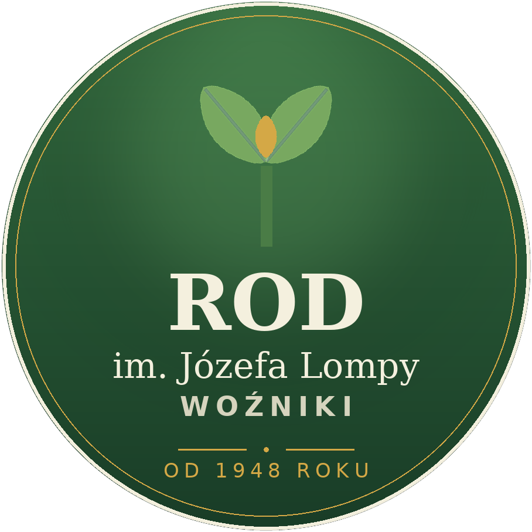
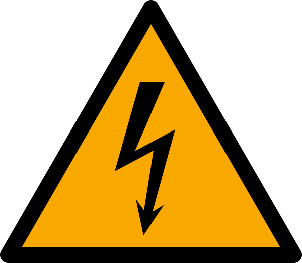

Z dniem 30 listopada 2026 r. wewnętrzna sieć działkowa w naszym ogrodzie zostanie wyłączona. Od tego dnia energia elektryczna płynie wyłącznie z indywidualnych przyłączy TAURON — każdy na podstawie własnej umowy i własnego licznika w złączu przy alejce.
Nic nie musisz robić. Twoja działka jest zasilana z własnego przyłącza i wyłączenie starej sieci jej nie dotyczy.
Załatw ją przed tym terminem. Po 30 listopada działka bez własnej umowy zostanie bez prądu. W razie pytań — zgłoś się do Zarządu.